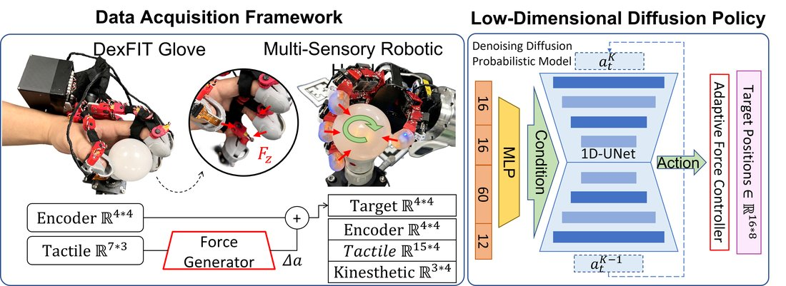

publications
Peer-reviewed work, newest first.
2026
-
 IROS
IROS
2026DexFIT: Force Informed Transfer for Dexterous Manipulation using Kinematically Isomorphic Tactile Glove AcceptedIEEE/RSJ International Conference on Intelligent Robots and Systems (IROS), 2026
1Korea University · 2Center for Humanoid Research, KIST · *Corresponding authorAbstract
Acquiring high-quality demonstration data for dexterous robotic hand manipulation remains challenging because conventional methods either lose critical force information during collection or require complex, error-prone retargeting processes. In this paper, we propose DexFIT (Dexterous Force-Informed Transfer), a system designed to transfer human contact forces to a robotic hand in real time through a kinematically isomorphic wearable glove equipped with integrated fingertip tactile sensors. The glove's 16-degree-of-freedom (DoF) joint structure is mechanically identical to the target robot hand, thereby eliminating the need for retargeting entirely. During data collection, a Force Generation (FG) module converts tactile readings from the operator's fingertips into supplementary joint angle commands, enabling the robot hand to generate contact forces proportional to the human's applied pressure. For autonomous deployment, an Adaptive Force Control (AFC) module monitors task progress via the robot's onboard tactile sensors and dynamically adjusts grasp forces. We train a vision-free Diffusion Policy on collected proprioceptive data (joint positions, kinesthetic sensors, and tactile signals) and evaluate the system on an in-hand light bulb rotation task. DexFIT achieves a 100% task completion rate in its optimal configuration, with a 34.5% reduction in task completion time and 16% reduction in energy consumption compared to position-only isomorphic control.
BibTeX
@inproceedings{lee2026dexfit, title = {DexFIT: Force Informed Transfer for Dexterous Manipulation using Kinematically Isomorphic Tactile Glove}, author = {Lee, Jaesung and Park, Sungwoo and Hwang, Donghyun}, booktitle = {IEEE/RSJ International Conference on Intelligent Robots and Systems (IROS)}, year = {2026} }
DexFIT at a glance

Left: data acquisition with the Force Generator turning tactile readings into supplementary joint commands. Right: vision-free Diffusion Policy with the Adaptive Force Controller at deployment.
Quantitative results
Ablation of DexFIT components on the in-hand light bulb rotation task. The task requires 300° cumulative rotation within 60 s against progressively increasing socket friction. Five trials per condition, ten demonstrations each.
| Method | Contact | FG | AFC | Success (%) | Time (s) | Ang. vel. (deg/s) | Energy (kJ) |
|---|---|---|---|---|---|---|---|
| Teleoperation (AFC off) | ✗ | ✗ | ✗ | 0 | — | 1.186 | — |
| Teleoperation (AFC on) | ✗ | ✗ | ✓ | 0 | — | 3.881 | — |
| Contact teleoperation (AFC off) | ✓ | ✗ | ✗ | 20 | 40.39 | 4.374 | 571.2 |
| Contact teleoperation (AFC on) | ✓ | ✗ | ✓ | 100 | 41.86 | 6.603 | 576.3 |
| FG teleoperation (AFC off) | ✓ | ✓ | ✗ | 100 | 31.48 | 7.366 | 543.9 |
| DexFIT (ours) | ✓ | ✓ | ✓ | 100 | 26.45 | 9.107 | 479.9 |
Preliminary scaling: training on 40 force-generated demonstrations instead of 10 further reduces task time to 24.22 s, raises angular velocity to 11.34 deg/s and cuts energy to 432.4 kJ.

Experimental setup. An RGB camera tracks the bulb angle and a six-axis force/torque sensor under the socket logs applied forces. The task is vision-free; the robot arm stays in a fixed pose.